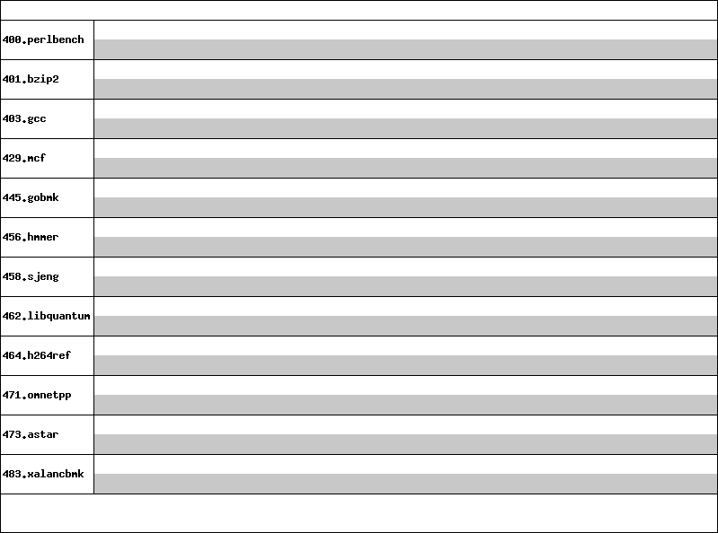

Invalid SPEC® CINT2006 Result
Copyright © 2006 Standard Performance Evaluation Corporation
Berkeley Architecture Research
Unknown HW Model

'reportable' flag not set during run
471.omnetpp base did not have enough runs!
456.hmmer base did not have enough runs!
445.gobmk base did not have enough runs!
458.sjeng base did not have enough runs!
429.mcf base did not have enough runs!
473.astar base did not have enough runs!
483.xalancbmk base did not have enough runs!
400.perlbench base did not have enough runs!
464.h264ref base did not have enough runs!
462.libquantum base did not have enough runs!
401.bzip2 base did not have enough runs!
403.gcc base did not have enough runs!
Input set must be 'ref' for a valid run (set to 'test' for this run)
Unknown flags were used! See
http://www.spec.org/auto/cpu2006/Docs/runspec.html#flagsurl
for information about how to get rid of this error.
- 401.bzip2:
-
"/usr/bin/riscv64-linux-gnu-gcc -static -Wl,-Ttext-segment,0x10000" (in CC)
"/usr/bin/riscv64-linux-gnu-gcc -static -Wl,-Ttext-segment,0x10000" (in LD)
"-O2 -fno-strict-aliasing" (in COPTIMIZE)